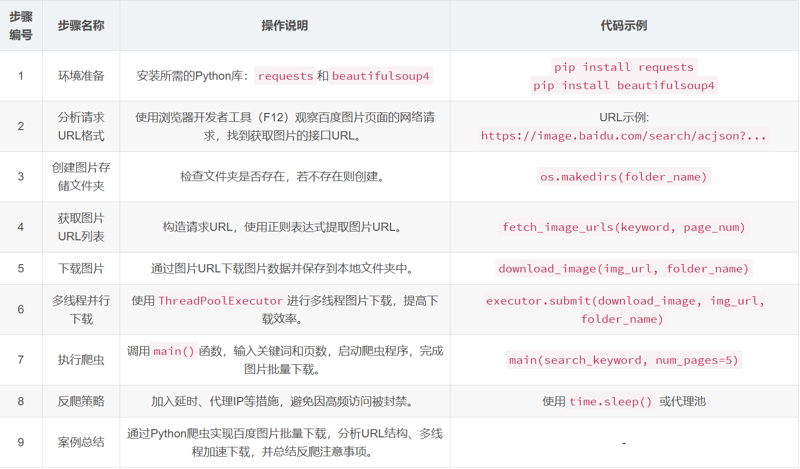

概述
要实现大批量爬取百度图片，可以使用Python编写一个网络爬虫，通过发送HTTP请求并解析网页内容获取图片URL，然后将图片下载到本地。以下是一个详细的技术案例，包括具体实现步骤和代码示例。
1. 案例概述
百度图片搜索页面可以展示大量的图片，我们可以通过分析其请求规律，编写爬虫从页面中获取图片URL，并将图片批量下载。我们将使用requests库获取网页内容，BeautifulSoup库解析HTML，re库进行正则匹配，同时使用多线程或异步库加速下载过程。
2. 案例需求分析
目标:
批量下载百度图片搜索结果中的优质图片
技术栈:
Python、requests、BeautifulSoup、正则表达式、线程池
难点:
1.爬虫需要模拟浏览器请求，避免被反爬机制检测
2.图片下载需高效且保证成功率
3.百度图片页面的URL是动态生成的，需要正确分析数据接口
3. 实现步骤
Step 1: 环境准备
1.pip install requests
2.pip install beautifulsoup4
Step 2: 分析百度图片URL请求规律
在百度图片页面进行搜索，使用浏览器开发者工具（F12）查看网络请求。可以发现，图片信息是通过特定的JSON接口获取的。通常请求的URL格式如下:
1.https://image.baidu.com/search/acjson?tn=resultjson_com&logid=XXXXX&ipn=rj&ct=201326592&is=&fp=result&queryWord={keyword}&cl=2&lm=-1&ie=utf-8&oe=utf-8&adpicid=&st=-1&z=&ic=0&word={keyword}&s=&se=&tab=&width=&height=&face=0&istype=2&qc=&nc=1&fr=&pn={page_num}&rn=30
queryWord和word是搜索关键词。
pn表示图片页码。
rn表示每页图片数量。
Step 3: 编写爬虫代码
以下代码示例展示了如何构建一个百度图片爬虫。该爬虫首先发起HTTP请求获取JSON数据，再解析其中的图片URL，然后逐一下载图片到本地。
1.import os
2.import re
3.import requests
4.from bs4 import BeautifulSoup
5.from concurrent.futures import ThreadPoolExecutor
6.
7.# 定义请求头，模拟浏览器行为
8.headers = {
9. "User-Agent": "Mozilla/5.0 (Windows NT 10.0; Win64; x64) AppleWebKit/537.36 (KHTML, like Gecko) Chrome/87.0.4280.66 Safari/537.36"
10.}
11.
12.# 创建文件夹存储图片
13.def create_folder(folder_name):
14. if not os.path.exists(folder_name):
15. os.makedirs(folder_name)
16.
17.# 获取图片URL列表
18.def fetch_image_urls(keyword, page_num):
19. url = f"https://image.baidu.com/search/acjson?tn=resultjson_com&logid=XXXXX&ipn=rj&ct=201326592&is=&fp=result&queryWord={keyword}&cl=2&lm=-1&ie=utf-8&oe=utf-8&adpicid=&st=-1&z=&ic=0&word={keyword}&s=&se=&tab=&width=&height=&face=0&istype=2&qc=&nc=1&fr=&pn={page_num*30}&rn=30"
20. response = requests.get(url, headers=headers)
21. response.encoding = 'utf-8'
22. # 使用正则表达式提取所有图片的URL
23. img_urls = re.findall(r'"thumbURL":"(http.*?)"', response.text)
24. return img_urls
25.
26.# 下载图片
27.def download_image(img_url, folder_name):
28. try:
29. img_data = requests.get(img_url, headers=headers).content
30. img_name = os.path.join(folder_name, img_url.split('/')[-1])
31. with open(img_name, 'wb') as img_file:
32. img_file.write(img_data)
33. print(f"Downloaded: {img_name}")
34. except Exception as e:
35. print(f"Failed to download {img_url}: {e}")
36.
37.# 主函数，负责获取URL和下载图片
38.def main(keyword, num_pages, folder_name="images"):
39. create_folder(folder_name)
40. with ThreadPoolExecutor(max_workers=10) as executor:
41. for page_num in range(num_pages):
42. img_urls = fetch_image_urls(keyword, page_num)
43. for img_url in img_urls:
44. executor.submit(download_image, img_url, folder_name)
45.
46.# 执行爬虫
47.if __name__ == "__main__":
48. search_keyword = "风景" # 可替换成需要的搜索关键词
49. main(search_keyword, num_pages=5)
代码解析:
1.请求图片数据：fetch_image_urls函数构造URL并发起请求，返回包含图片URL的列表。
2.图片下载：download_image函数负责下载并保存图片，同时使用多线程加速下载过程。
3.多线程下载：ThreadPoolExecutor用于并行下载图片。
4. 运行代码
运行以上代码后，会在images文件夹下存储批量下载的百度图片。根据网络环境和页面数量，可实现高效的图片下载.
5. 注意事项
1.反爬策略：百度可能会检测异常访问频率导致IP封禁。可以通过减少请求频率、使用代理IP等方式规避反爬。
2.使用代理：在高频请求情况下，建议添加代理池来模拟不同IP访问。
3.延时操作：为避免频繁请求导致的封禁，可以在请求间添加随机延时。
6. 案例总结
以上技术案例展示了如何利用Python爬虫实现大批量百度图片的下载。通过合理构造请求、使用正则表达式解析数据，以及使用多线程提升效率，该爬虫具备较好的性能和可拓展性。

评论区